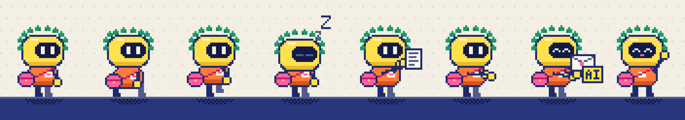

Pixel film · 21 seconds · with sound
The Day the Desk Got a Mail Slot
How a letter to claudius@barcik.training travels, told by a small robot with a laurel wreath and a mailbag. A companion to the publication An AI Assistant with Its Own Mailbox.
Press play. The sound is a little chiptune with effects on every beat; the film also works muted.
What each beat teaches
- The slot and the copier
The address is a group. Every message is passed on to two members at once.
- Robert gets his copy first
One copy shoots through the tube and lands on his desk before Claudius has seen anything.
- The file waits
Day turns to night and back. No program runs around the clock. Claudius sleeps.
- "Check your mail!"
Nothing happens until Robert opens a session and asks.
- Read, then draft
Claudius fetches the file, reads it and types a reply. The draft has not left the building.
- The stamp
Robert reads the exact text. Only his yes lets it go out.
- Signed as written by an AI
The reply flies off with its yellow AI tag, so the reader knows what wrote to them.
Meet Claudius

Yellow helmet with a dark visor, laurel wreath for the Roman name, pink mailbag for the job. He is drawn in code, so every pose can be changed or reused: on a slide, as a GIF in a chat, or in the next film.
Files


Everything comes from one script, make_film.py: a 320×180 canvas in the Riso palette of the sites,
24 frames per second, scaled up six times without smoothing. To change a caption, a colour or the timing, edit the script and run
python make_film.py film <frames_dir> <out_dir> with the training-ops venv.